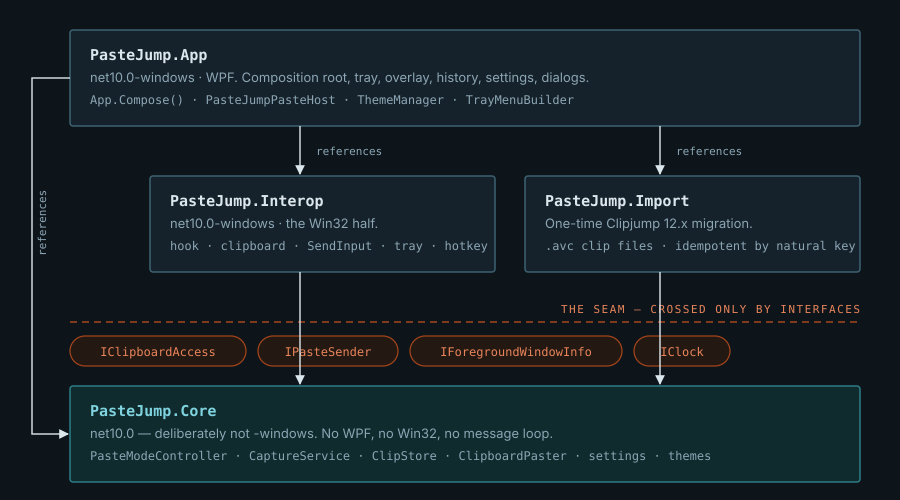
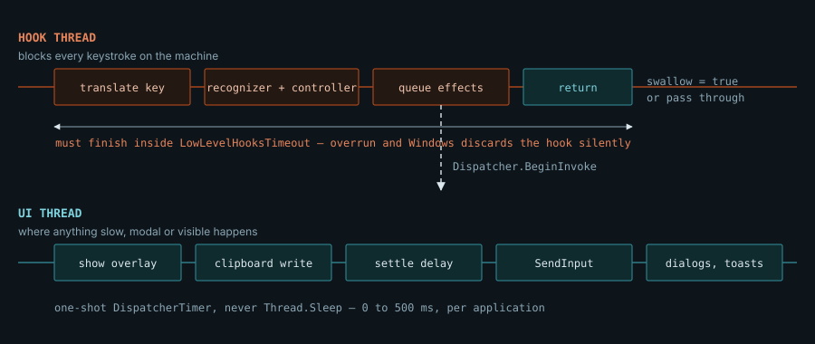

Architecture reference · hold Ctrl, tap V
Seven views of one machine: the layers, the components, the classes, the two sequences that matter, the session state, the store, and the thread budget that shapes all of it.
Every tap of V steps one clip further back through the stack; the overlay follows under
your cursor; releasing Ctrl pastes whatever is showing. No window to click, no mouse, no
focus change. That gesture is the product, and three of its properties dictate the entire architecture.
The keyboard hook is machine-wide and on a deadline. A
WH_KEYBOARD_LL callback blocks every keystroke on the computer until it returns, and
Windows silently discards a hook that outlives LowLevelHooksTimeout — leaving an app
that looks healthy and has gone deaf. So nothing in the callback sleeps, prompts, parses or draws;
it decides, queues, and returns.
Swallowing a keystroke takes it away from everyone. With no session open, exactly one
chord is consumed — Ctrl plus the trigger — and nothing else, swept over all 256
virtual keys in every modifier state by IdleKeyboardTests. With a session open the gesture
owns the keyboard except Alt and Win chords, which stay with the shell so Alt+Tab
is always the way out.
An empty store must not break Ctrl+V. The hook swallows the chord to build the
gesture, so a store with nothing in it hands the keystroke straight back as a native paste
(PasteCommitKind.PassedThrough). Silently breaking Ctrl+V system-wide is the worst thing
this application could do.
The rule that follows from all three
PasteJump.Core references neither WPF nor Win32 and never needs a message loop. Win32
access is expressed as interfaces in Core/Abstractions and implemented in
Interop. Anything that lands somewhere untestable gets moved, not covered by a UI test
— which is why the capture service and the whole state machine are plain classes with 997 tests
around them.
Dependencies point one way only. Core is the floor: it knows about clips, sessions and
settings, and nothing about windows or the operating system. Everything the OS provides arrives through
four small interfaces, which is also what lets tests drive the machine with a fake clipboard and no
keyboard at all.

artifacts/, never under src/.PasteJump has no main window. Everything starts from one of four operating-system events, and
App.Compose() wires the objects that handle them by hand — about a dozen with fixed
lifetimes, so a DI container would add indirection and remove nothing.
%%{init: {"theme":"base","themeVariables":{"darkMode":true,"background":"#0D151B","primaryColor":"#16222B","primaryTextColor":"#DCE7ED","primaryBorderColor":"#3E6273","secondaryColor":"#0F2B2E","tertiaryColor":"#241812","lineColor":"#7FA6BB","fontFamily":"IBM Plex Mono, monospace","fontSize":"13px","clusterBkg":"#101A21","clusterBorder":"#2A414F","edgeLabelBackground":"#0D151B"}}}%%
flowchart TB
subgraph OS["Windows"]
KEY["Keystroke"]
CLIP["Clipboard change"]
HOT["Registered hotkey"]
TRAY["Tray click"]
end
subgraph IO["PasteJump.Interop — Win32 adapters"]
HOOK["LowLevelKeyboardHook<br/>WH_KEYBOARD_LL"]
MSGW["MessageOnlyWindow<br/>HWND_MESSAGE"]
MON["ClipboardMonitor<br/>AddClipboardFormatListener"]
HK["GlobalHotkey<br/>RegisterHotKey + MOD_NOREPEAT"]
TI["TrayIcon"]
VKT["VirtualKeyTranslator"]
CBA["Win32ClipboardAccess"]
SND["InputSender<br/>SendInput + real scan code"]
FG["ForegroundWindowInfo"]
end
subgraph CORE["PasteJump.Core — decisions"]
REC["PasteGestureRecognizer<br/>what to swallow"]
CTL["PasteModeController<br/>the session"]
CAP["CaptureService<br/>settle, guard, store"]
GUARD["SelfWriteGuard"]
PST["ClipboardPaster<br/>write then keystroke"]
STORE["ClipStore + BlobStore<br/>SQLite + deflate"]
end
subgraph APP["PasteJump.App — WPF"]
HOST["PasteJumpPasteHost<br/>IPasteModeHost"]
OVL["OverlayWindow"]
HIST["HistoryWindow"]
TOAST["ToastWindow"]
MENU["TrayMenuBuilder"]
end
KEY --> HOOK
CLIP --> MSGW
HOT --> MSGW
TRAY --> MSGW
MSGW --> MON
MSGW --> HK
MSGW --> TI
HOOK -->|"KeyboardHookEvent"| VKT
VKT -->|"GestureKey"| REC
REC -->|"actions"| CTL
CTL -->|"IPasteModeHost"| HOST
CTL -->|"IClipCatalog"| STORE
HOST -->|"BeginInvoke"| OVL
HOST --> PST
PST -->|"NoteWrite SelfWriteKey"| GUARD
PST -->|"TryWrite"| CBA
PST -->|"SendPaste"| SND
PST -->|"settle delay per app"| FG
MON -->|"OnClipboardChanged"| CAP
CAP -->|"TryRead"| CBA
CAP -->|"IsOwnWrite"| GUARD
CAP -->|"Add + RecordHistory"| STORE
CAP -->|"ClipCaptured"| TOAST
CAP -->|"NotifyClipCaptured"| CTL
HK -->|"Pressed"| HIST
TI -->|"Activated"| MENU
HIST --> STORE
WM_CLIPBOARDUPDATE, which no other process's hook can suppress; the gesture rides the
keyboard hook, which any hook earlier in the chain can. When copying works and pasting does not, a rival
clipboard manager eating the injected keystroke is the first suspect — hence the configurable
PasteKeystroke.The gesture is split in two on purpose. PasteGestureRecognizer answers only
“is this keystroke mine, and what does it mean”;
PasteModeController owns the session — the window of clips, the cursor, the commit
mode, the marks — and performs no side effect itself. Everything it wants doing goes through
IPasteModeHost, which is what makes a paste testable without a clipboard.
%%{init: {"theme":"base","themeVariables":{"darkMode":true,"background":"#0D151B","primaryColor":"#16222B","primaryTextColor":"#DCE7ED","primaryBorderColor":"#3E6273","lineColor":"#7FA6BB","fontFamily":"IBM Plex Mono, monospace","fontSize":"12px","classText":"#DCE7ED"}}}%%
classDiagram
direction TB
class PasteGestureRecognizer {
+bool CtrlHeld
+bool AltHeld
+bool WinHeld
+bool ShiftHeld
+int MissedControlReleaseCount
+Handle(GestureKey, isDown) bool
+HandleCharacter(char) bool
+ShouldSwallowUnhandled() bool
+Reset()
}
class PasteModeController {
+PasteSessionState State
+PasteCommitMode CommitMode
+Clip Current
+Begin() PasteCommitKind
+Handle(PasteAction) PasteCommitKind
+HandleDigit(int) PasteCommitKind
+SetSearchQuery(string)
+ModifierReleased() PasteCommitKind
+Abort() PasteCommitKind
+NotifyClipCaptured()
}
class IPasteModeHost {
<<interface>>
+SnapshotExistingClipboard()
+RestoreExistingClipboard()
+PasteClip(Clip, IClipFormatter)
+PasteJoined(clips, IClipFormatter)
+PassThroughPaste()
+ShowOverlay(PasteOverlayModel)
+HideOverlay()
+RequestDeleteAllConfirmation(int, Action)
+NoteClipDeleted()
}
class IClipCatalog {
<<interface>>
+Snapshot() Clip[]
+Delete(long)
+DeleteAllUnpinned()
+SetPinned(long, bool)
+MoveToFront(long)
}
class PasteOverlayModel {
+long ClipId
+int Position
+int Total
+string PreviewText
+PasteCommitMode CommitMode
+PasteKindFilter KindFilter
+int MarkedCount
+bool PopOnPaste
}
class PasteJumpPasteHost {
-Dispatcher _dispatcher
-ClipboardPaster _paster
-IReadOnlyList~ClipPayload~ _savedClipboard
+SetOverlayAnchor(x, y, PopupPosition)
}
class ClipboardPaster {
+MaxWriteAttempts = 4
+Write(payloads, thenPaste)
+SendPasteOnly() bool
-ResolveSettleDelay() TimeSpan
}
class PasteKeyMap {
+ToAction(char) PasteAction
+Parse(string) PasteKeyMap
+Validate() bool
}
class ClipStoreCatalog
PasteGestureRecognizer --> PasteModeController : drives
PasteModeController --> IPasteModeHost : asks
PasteModeController --> IClipCatalog : reads and mutates
PasteModeController ..> PasteOverlayModel : renders one frame
IPasteModeHost <|.. PasteJumpPasteHost
IClipCatalog <|.. ClipStoreCatalog
PasteJumpPasteHost --> ClipboardPaster : write then keystroke
PasteGestureRecognizer ..> PasteKeyMap : letters are data
PasteOverlayModel is
immutable and carries ClipId because Position is a coordinate in the
filtered window — resolving a clip by position once drew the wrong image when a kind
filter was on.| Seam | Implemented by | Why it exists |
|---|---|---|
IClipboardAccess | Win32ClipboardAccess | Reads every format in one pass, with a bounded retry (~620 ms). The original spun on OpenClipboard forever, turning another app's misbehaviour into a hang. |
IPasteSender | InputSender | SendInput with a real scan code and our own dwExtraInfo signature — that signature is how the hook ignores our injection without ignoring RDP, VMs or macro keyboards. |
IForegroundWindowInfo | ForegroundWindowInfo | Names the window being pasted into, so the settle delay can be per application and the ignore list can be checked before reading a password manager's clipboard. |
IClipCatalog | ClipStoreCatalog | Keeps “delete all unpinned” as one rule in the store rather than restated by whoever draws the dialog. |
IPasteModeHost | PasteJumpPasteHost | Every side effect of the state machine, all of it queued onto the Dispatcher — the reason the controller can run inside a keyboard hook at all. |
An OLE writer announces its data object and renders it afterwards, so a single Ctrl+C raises two or
more WM_CLIPBOARDUPDATE messages with different sequence numbers — and a read landing
between them sees eight bytes of bookkeeping and no content. Every guard below exists because one of
those readings was once stored as a clip.
%%{init: {"theme":"base","themeVariables":{"darkMode":true,"background":"#0D151B","primaryColor":"#16222B","primaryTextColor":"#DCE7ED","primaryBorderColor":"#3E6273","lineColor":"#7FA6BB","actorBkg":"#16222B","actorBorder":"#3E6273","actorTextColor":"#DCE7ED","signalColor":"#7FA6BB","signalTextColor":"#BBD0DC","labelBoxBkgColor":"#0F2B2E","labelBoxBorderColor":"#2E7D88","labelTextColor":"#DCE7ED","noteBkgColor":"#241812","noteBorderColor":"#A8451A","noteTextColor":"#F0C4AE","sequenceNumberColor":"#0D151B","activationBkgColor":"#0F2B2E","fontFamily":"IBM Plex Mono, monospace","fontSize":"12px"}}}%%
sequenceDiagram
autonumber
participant SRC as Source app
participant WIN as Windows clipboard
participant MON as ClipboardMonitor
participant CAP as CaptureService
participant CB as Win32ClipboardAccess
participant SW as SelfWriteGuard
participant ST as ClipStore
participant UI as Toast / windows
SRC->>WIN: Ctrl+C, OleSetClipboard then OleFlushClipboard
WIN->>MON: WM_CLIPBOARDUPDATE
MON->>CAP: OnClipboardChanged()
CAP->>CAP: schedule read in ClipboardSettleMs, default 120 ms
WIN->>MON: WM_CLIPBOARDUPDATE, the second step
MON->>CAP: OnClipboardChanged()
Note over CAP: Coalesced, and the window RESTARTS.<br/>Bounded at 4 extensions so an app<br/>rewriting on a timer cannot defer for ever.
CAP->>CAP: sequence number moved? excluded process?
CAP->>CB: TryRead()
CB-->>CAP: ClipboardSnapshot: payloads, text, kind, hasOwner
CAP->>SW: IsOwnWrite(snapshot.SelfWriteKey)
SW-->>CAP: no, this is somebody else's copy
CAP->>CAP: bookkeeping only? then retry, it is a half-written clipboard
CAP->>CAP: same DedupKey as the last clip?
ST->>ST: republish carrying MORE bytes: ReplacePayloads, silently
CAP->>ST: Add(snapshot) then RecordHistory
ST-->>CAP: Clip, wasNewCapture
CAP->>UI: ClipCaptured
UI->>UI: toast, beep, controller.NotifyClipCaptured()
SetImage holds the clipboard locked for ~50 ms and its CF_DIB first reads
at 51 ms.| Guard | Budget | What it prevents |
|---|---|---|
| Settle window, restarting | 120 ms × 4 | One copy stored as two clips, or announced as a repeat of itself. |
| Sequence number unchanged | — | Paying to open the clipboard for a duplicate notification. |
| Excluded process, checked first | — | Pulling a password manager's clipboard into memory before deciding to discard it. |
| Bookkeeping-only payloads | 2 retries, 350 ms | An 8-byte DataObject stored as a [binary] clip — and, worse, promoting an unrelated old blob to the front of the stack. |
IsOwnWrite(SelfWriteKey) | 5 s TTL | A paste being captured straight back as a new clip. Content-addressed, so there is no timing race. |
IsEchoOfOwnWrite | 1 s | The second notification for one paste falling through to the duplicate branch, which announces itself. |
| Owner is null | — | An app flushing its formats as it closes reading as a fresh copy. Only ownership tells that from a repeat. |
RedundantImageFormats.Prune | ~⅔ of bytes | Keeping the same pixels three times as CF_DIB, CF_DIBV5 and System.Drawing.Bitmap. |
This is the whole product in one diagram. Note where the work happens: the hook thread decides and
returns, and every consequence — the overlay, the clipboard write, the keystroke — runs on
the UI thread through Dispatcher.BeginInvoke. Note also the last two messages: our own
paste comes back round as a clipboard change, and the capture path has to recognise it. That return
edge is where the bug reported this morning lived.
%%{init: {"theme":"base","themeVariables":{"darkMode":true,"background":"#0D151B","primaryColor":"#16222B","primaryTextColor":"#DCE7ED","primaryBorderColor":"#3E6273","lineColor":"#7FA6BB","actorBkg":"#16222B","actorBorder":"#3E6273","actorTextColor":"#DCE7ED","signalColor":"#7FA6BB","signalTextColor":"#BBD0DC","labelBoxBkgColor":"#0F2B2E","labelBoxBorderColor":"#2E7D88","labelTextColor":"#DCE7ED","noteBkgColor":"#241812","noteBorderColor":"#A8451A","noteTextColor":"#F0C4AE","sequenceNumberColor":"#0D151B","activationBkgColor":"#0F2B2E","fontFamily":"IBM Plex Mono, monospace","fontSize":"12px"}}}%%
sequenceDiagram
autonumber
participant U as You
participant HK as Hook thread
participant REC as Recognizer
participant CTL as Controller
participant H as Paste host, UI thread
participant OV as OverlayWindow
participant W as Windows
participant CAP as CaptureService
U->>HK: Ctrl down
HK->>REC: Handle(Control, down)
REC-->>HK: not swallowed, the app underneath tracks Ctrl too
U->>HK: V down
HK->>HK: read Ctrl, Alt, Win, Shift LIVE via GetAsyncKeyState
HK->>REC: Handle(Paste, down)
REC->>CTL: Begin()
CTL->>H: SnapshotExistingClipboard()
CTL->>CTL: RefreshWindow(), kind filter then search query
alt store is empty
CTL->>H: PassThroughPaste()
Note over CTL,H: PassedThrough. Never swallow Ctrl+V<br/>when there is nothing to offer.
else clips available
CTL->>H: ShowOverlay(PasteOverlayModel)
H->>OV: BeginInvoke: place and show
OV->>W: caret, else foreground centre, else corner if topmost
end
REC-->>HK: swallowed, so Edge never sees the V
U->>HK: V again, and again
HK->>CTL: Advance, then Render, then ShowOverlay
U->>HK: Ctrl up
HK->>REC: Handle(Control, up)
REC->>CTL: ModifierReleased()
CTL->>CTL: Commit(): marks win, else suppressed by Delete, else current clip
CTL->>H: PasteClip(clip, formatter)
H->>H: BuildPayloads, apply formatter
H->>H: NoteWrite(snapshot.SelfWriteKey)
Note over H: The fix. Key the round trip, not the bytes:<br/>Windows refills CF_TEXT, CF_OEMTEXT and<br/>CF_LOCALE from the PASTING thread's locale.
H->>W: TryWrite(payloads), up to 4 attempts
W-->>H: written
H->>H: wait the settle delay for this app, default 25 ms
H->>W: SendInput: Ctrl+V, or Shift+Insert
W->>U: the application pastes
W->>CAP: WM_CLIPBOARDUPDATE, our own write coming back
CAP->>CAP: IsOwnWrite(SelfWriteKey): skipped, no clip, no toast
Core precisely so it can be tested.The commit is not one branch. Marks beat the cursor, a Delete during the session
suppresses the paste entirely, and the X cycle can arm something destructive — which
is why the only irreversible outcome asks first, and asks asynchronously, because a modal
dialog inside the hook would block every keystroke on the machine.
| PasteCommitKind | Reached when | What the user sees |
|---|---|---|
Pasted | Mode is Paste and a clip or a set of marks exists | The clip arrives; with Shift held it is also deleted (“pop”). |
PassedThrough | Empty store, emptied window, or every mark deleted | A native Ctrl+V. Nothing of ours happened. |
Cancelled | Esc, mode is Cancel, or Delete was pressed this session | Clipboard restored, nothing pasted. |
Deleted | Mode is Delete | Current clip gone, clipboard restored. |
DeleteAllRequested | Mode is DeleteAll | A confirmation, later, on the UI thread. Nothing has been deleted yet. |
PushedToClipboard | S | Clip is on the clipboard; no keystroke sent. |
None | Stepping, searching, pinning, marking, deleting one clip | Session stays open. |
In Browsing, holding Ctrl is what keeps the session alive and releasing it commits. In
Searching that would be unusable — you need both hands to type — so releasing
Ctrl does nothing at all and the session ends explicitly with Enter or Escape. While the search box is
up, no letter and no digit is an action: the arrows are the only way to step, because
they are the one pair that can never be part of a query.
L generalises that freedom to browsing. A locked session is still
Browsing — the lock is a flag rather than a fourth state, since search and lock are
independent — but RequiresModifier is false, so the Ctrl release commits nothing and
every key goes on acting. One property answers it for all four callers that ask: the commit, the action
gate, the missed-release reconciliation and the health watchdog. Unlocking is refused unless Ctrl is held,
or the session could be left neither locked nor held open, accepting no key but Escape while swallowing
every one of them.
%%{init: {"theme":"base","themeVariables":{"darkMode":true,"background":"#0D151B","primaryColor":"#16222B","primaryTextColor":"#DCE7ED","primaryBorderColor":"#3E6273","lineColor":"#7FA6BB","fontFamily":"IBM Plex Mono, monospace","fontSize":"12px","labelBackgroundColor":"#0D151B"}}}%%
stateDiagram-v2
direction LR
[*] --> Idle
Idle --> Browsing : Ctrl + trigger, and NO Alt, Win or Shift
Idle --> Idle : trigger alone, or any other key, passes through
Browsing --> Browsing : trigger steps older, arrows, digits, Home, End
Browsing --> Browsing : K kind filter, Z formatter, X commit cycle, J mark
Browsing --> Searching : F
Searching --> Browsing : Ctrl + F closes the box
Searching --> Idle : Enter commits, Esc aborts
Browsing --> Browsing : L locks - Ctrl stops holding the session open
Browsing --> Browsing : ? lists every key in the overlay
Browsing --> Idle : Ctrl up commits, unless locked
Browsing --> Browsing : Enter pastes and keeps the session open
Browsing --> Idle : Esc aborts, clipboard restored
Browsing --> Idle : H, O, T, E, F1 end the session, then open a window
Browsing --> Idle : Y types the clip out, clipboard untouched
Browsing --> Idle : Ctrl release never seen and NOT locked, session ABORTED
F1 once did
not, so the key card appeared over a live overlay that went on swallowing the very keys it was
explaining. The last edge is the watchdog: a missed Ctrl-up is aborted rather than committed, because
releasing Ctrl is what asks for a paste and here we do not know that the user did.The X cycle runs Paste → Cancel → Delete → DeleteAll →
Cancel and never returns to Paste — deliberate parity with the original, since a destructive
cycle that looped back through “paste” would make an over-eager keypress paste something you
were trying to delete. The kind filter, by contrast, does wrap: nothing there is destructive,
so getting back to seeing everything must not cost three more taps.
Immutable ids plus a fractional sort_key, so repositioning a pinned clip is one
UPDATE — in the original it was three FileMove calls per clip across
parallel directories. The stack and the archive are separate tables on purpose: a clip is a thing to
paste and gets evicted; a history row is a record of when something was copied and gets pruned by age.
%%{init: {"theme":"base","themeVariables":{"darkMode":true,"background":"#0D151B","primaryColor":"#16222B","primaryTextColor":"#DCE7ED","primaryBorderColor":"#3E6273","lineColor":"#7FA6BB","fontFamily":"IBM Plex Mono, monospace","fontSize":"12px"}}}%%
erDiagram
clip ||--o{ clip_format : "one row per clipboard format"
clip ||--o{ clip_tag : "tagged"
tag ||--o{ clip_tag : "applied to clips"
history ||--|| history_fts : "FTS5, external content"
clip {
INTEGER id PK
REAL sort_key "fractional, pinned first"
INTEGER pinned
TEXT preview "capped at PreviewMaxChars"
INTEGER kind "Text Image Files Other"
TEXT source_exe
INTEGER total_bytes
TEXT content_hash "identity"
}
clip_format {
INTEGER clip_id FK
INTEGER format_id "re-registered by NAME on write"
TEXT format_name
BLOB data "small payloads inline"
TEXT blob_hash "large payloads in blobs, deflated"
}
history {
INTEGER id PK
TEXT captured_utc
TEXT preview "indexed by history_fts"
TEXT blob_hash "full text beyond the preview cap"
TEXT imported_from
}
RegisterClipboardFormat are stable
only for the Windows session, so a payload stores the name and is re-registered on write.
Persisting the number alone would attach today's bytes to an unrelated format tomorrow.They were two until this morning, and the missing third is what the case study below is about.
| Key | Question | Covers | Consequence of getting it wrong |
|---|---|---|---|
ContentHash |
Is this the same clip? | Every format's id, name and bytes. | It is a stored column and the lookup for enrichment. Too loose and two clips merge. |
DedupKey |
Did the user copy this again? | Trimmed text alone for text clips; the content hash otherwise. | Word and Excel stamp their rich formats with generator ids, so a bytes-exact key never fires and the stack fills with apparent duplicates. |
SelfWriteKey |
Is this clipboard ours? | Only the payloads Windows does not refill for itself. | Too tight and PasteJump captures its own paste as a new clip — which is exactly what happened. |
Read this figure as the reason for a dozen decisions elsewhere: why the trigger key and the letter
map are parsed once per settings change rather than per keystroke, why the delete-all prompt is a
request rather than a question, and why a Console.Beep — which blocks until the tone
finishes — goes to the thread pool.

IsInstalled, because a
discarded hook leaves that reporting true for ever. It reasons from evidence instead: has
anything been heard since Ctrl went down, and is a session still open while Ctrl is physically up.The report: “I pressed Ctrl+V in Edge and I saw the paste overlay, and immediately it displayed copy overlay also.” Not a notification fault and nothing to do with Edge. Look at the last two messages of View 5: a paste comes back as a clipboard change, and it was not recognised as ours — so it was stored as a brand new clip and announced, exactly like any copy.
The live logs said so in one reading. logs\gesture.log has the commit
(Ctrl up ... fg=msedge.exe at 07:55:37.305) and logs\capture.log has the read
135 ms later — STORED clip 3699 (new=True), where every later paste of the same
clip said skipped: this is our own write.
Two clips in the store held the same 66 characters, the same four formats and the same 2,044 bytes. They differed in a single byte pair.
CF_LOCALE = 0x4009, English (India) — the layout the text was copied under.CF_LOCALE = 0x0409, English (US) — what Windows synthesised when it was pasted.A clipboard write does not read back as what was written. The writer deliberately
drops CF_TEXT, CF_OEMTEXT and CF_LOCALE when
CF_UNICODETEXT is present, because a stale ANSI rendering captured under another codepage
can contradict the Unicode beside it and whichever the target app prefers decides what the user gets.
Windows then regenerates all three — from the pasting thread's locale, not the copying
application's. So the round trip is not the identity, and ContentHash, which covers
every format's bytes, could not match it.
Why it survived so long
It is self-limiting per clip. The recaptured twin carries the synthesised locale, so it is a fixed point and every later paste of that twin is recognised correctly. The log therefore reads like an intermittent fault — stored once, skipped twice — and a bug that stops reproducing on the second attempt is a bug that gets dismissed. It reappears for each newly captured clip, for ever.
Measured footprint on the reporting machine: 347 clips carry 0x4009 and 228 carry 0x0409, and eight of the ten largest same-text clip groups differ only in that byte. Those groups are paste-recaptures, not repeat copies — one duplicate clip and one history row per first paste, with the browse position reset each time.
ContentHash still identifies
a clip and is untouched, since those bytes really do differ. SelfWriteKey identifies a
round trip: the same hash over the payloads Windows does not refill. Where nothing is dropped it
is ContentHash, so images, file lists and every existing store are unaffected.
src/PasteJump.Core/Model/ClipboardSnapshot.csSynthesisedTextFormats.DropDerived is now called
by both the write filter and the identity key — one list, not two that can disagree, which is
precisely this bug's shape.
src/PasteJump.Core/Model/SynthesisedTextFormats.csCF_TEXT keeps it: an
empty payload set would identify every such clip as the same one, and a paste would suppress the
capture of an unrelated copy.The transferable part
Three instruments answered this and none of them was reasoning: the gesture log gave the commit, the capture log gave the read, and the store gave the cause. When a capture question comes up again, query the database early — a format list and four bytes settled in minutes what an afternoon of plausible theories about Edge would not have.